Executive Summary
The following study was conducted in order to help achieve a better understanding of usability issues in regards to the Mondays interface. Monday.com is a online collaboration tool that allows teams to work together better. Our study aimed to examine the following questions:
- Can users select & find the template they need?
- Can users easily invite other team members to the project board?
- Once a task is assigned, are users able to easily adjust their task status?
- Can the user efficiently and easily adjust their weekly tasks on a single page using the “My Week” feature?
Our goal was to interview entry level users with little experience with software collaboration tools to better understand their experience in comparison to experienced personas. A test script (Appendix A) was created to guide the participants in a typical project planning scenario, creating a template, inviting users, adjusting their status, and managing their estimated time-frame. Brief pre- and post test questionnaires were included to capture incoming and outgoing opinions on using Monday.
All testing methods and conditions were standardized for all participants. Throughout the test users were encouraged to engage in what became confusing throughout the task. Using these personas and findings, we were able to usability tests on Mondays website. The sections below entail a detailed description of our study’s process, findings, and recommendations.
Monday: The team management tool
Monday.com is a visual project management tool that helps transform the way teams work together that enables people to manage work, meet deadlines and build a culture of transparency. The purpose of this website is to let users have a fit template to manage and plan their projects and track their project progress with team members. Monday.com is easy to get started, first, users can pick a template and then customize the surface to make it own. Users can get to work by adding their project to-do tasks on the board and share the project plan with their teams by inviting users as well as assign different tasks to different members. Users also can track the project progress and have an awareness about what tasks have been done and what need to be done with deadlines.
Procedure
Our usability evaluations for Monday.com were conducted as individual sessions. Tools such as Murray were avoided in favor of a more modularized test environment for finer control over quantitative data collection.
A total of 6 participants were tested. 6 Participants seemed to be an acceptable number to achieve a diverse spectrum of rich qualitative data as well as quantitative data.
Tests were conducted in a multitude of environments, but held under the same research conditions as far as equipment and protocol.
A consent form for the participants was provided before research began, confirming that the user is aware that their recorded data would be used and referenced in a scientific article, though some participants stated their consent verbally through an audio recording. We began by walking the participant through a series of short preliminary questions, covering their current Major, their age, as well as a description of their previous experience with software based project management collaboration tools. We then requested that the user explore the opening page of the site at their leisure, and explain what type of tool/app they’re currently using based on the first impressions. Users were then prompted to list 3 adjectives they’d use to describe the look & feel of the site, before beginning the first of four tasks. Upon completion of a task, users completed a short questionnaire concerning their confidence and satisfaction of task completion. The user’s time taken to complete the task was also recorded using a stopwatch, and the user was also prompted to provide additional comments elaborating on their experience completing the task. Upon completing all four tasks, users were asked about how they generally feel, and were invited to elaborate on any examples if any that made the site confusing or difficult to use. Users were then asked to compare their experience using Monday.com with any of the past software based collaboration tools they used. Lastly, users were asked if they would use this tool again in the future. With the data collected we were able to create a high fidelity model of the site’s overall strengths and weaknesses when it comes to usability.
Testing Enviornment & Recruiting Criteria
Our usability test will be held in room 721 of the DePaul CDM in the SOUL lab. This testing room is separated into two spaces. On one side, the moderator will hold for the usability test with the participant and on the other the other two group members will be observing and taking notes on the usability test. We are going to use Morae software to record our progress and results.
Problems encountered:
- There were some examples of technical issues with the site. When users hovered over a new template for example, an ‘explore’ button would pop up, and naturally, some users clicked this button hoping to successfully chose the template, but the button lead the users to a blank page several times even after reloading the browser.
- Another issue users faced was the timeline option in the ‘My Week’ page not working upon clicking it. It worked fine in the dashboard, but the ‘My Week’ page seemed to have several broken links and buttons.
Observations & Recommendations
All observations and recommendations are presented below on a task by task basis. The observations were analyzed based on the following metrics
- Positives: Findings that support or affirm the usability of a feature.
- Minor: Small Issues that don’t require immediate attention.
- Severe: Issues that are directly affecting usability and should be attended to.
- Very Severe: Big issues that should be prioritized and fixed immediately.
Task 1
You are the project lead for an office party that’s happening in two weeks. You have to coordinate your team members to bring the event together. You notice that there are preformatted templates for project planning. How would you go about selecting this template? Then Stop.
Objective: Select Template ( Can users find template they need?)
Severe
- 83% of users made at least 1 error when attempting to create a new board.
- The average rating for satisfaction of task completion was ⅗.
- Participants don’t look at the Categories Tab categorizing all preformatted template 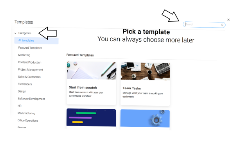
- Participants felt overwhelmed with many options to select from
Minor
- All users knew what tool they needed, but couldn’t select board they needed.
Positive
- Only one participant was able to create template board with no few errors.
Quotes
- “All templates look the same”
- “Not obvious what would be the best one”
- “Glad to see all categories within the same page”
- “Misleading explore button to preview template”
Recommendations
- The templates feature is a very important and useful tool. If when the user clicks create a board it shows the categories first then all the templates, I believe it would be less overwhelming for the user to find what they’re looking for.
Task 2
As the project lead you have selected your template for the office party. Your coworker Tom is in charge of photography for the party and his email is tom@email.com. Your coworker Lauren is in charge of getting balloons for the party, and her email is lauren@gmail.com. How would you go about adding them to the board?
Objective: Inviting Users (Can users easily invite group members to project board?)
Very severe
- 50 % of users encountered at least one error.
- Participants agreed it’s not obvious, you have to analyze interface.
- Average satisfaction for task completion 3 out of 5.
- Participants confused on multiple points to add user to board. 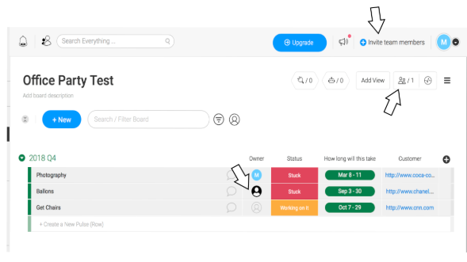
Minor
- Options don't pop out right away.
Positive
- All participants feel this task is trial and error learning.
Quotes
- “Very learnable after first try”
- “Clunky to Navigate”
- “Invite team members’ button not immediately visible and misleading”
- “No space to put the name of team member, but space for email”
Recommendations
- This task is crucial for collaboration. If the on the board it was more prominent in one way to add users, this would diminish the confusion.
- Below you can see the main points at which participants added team members to the board. To reduce confusion I would remove green arrow and red arrow then, make the blue arrow say “Invite team members to this board” 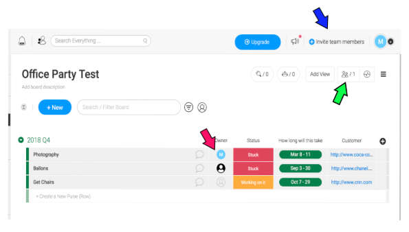
Task 3
You are Tom the photographer. You have been invited to join the office party template board. Your Manager Sue has assigned you to take photos of all the staff before the event which is in two weeks. How would you go about adjusting the status of your individual task?
Objective: Task Navigation ( Once a task is assigned, are users able to easily adjust their status ? )
Minor
- Only 33% of paticipants encountered an error.
Positive
- The average rating for satisfaction of task completion was 4.3 out of 5.
- All Participants completed task in 30 seconds or less.
Quotes
- “I like adding custom labels for status”
- “Very learnable”
Recommendations
- To edit personal status of task, Participant clicks task then is promoted to edit/add labels. I would add the edit icon pencil next to the Status for more clarity and less steps. 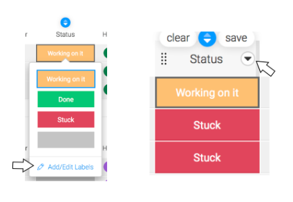
Task 4
You are currently working on your photography task. Using the “My Week” feature, change your estimated timeframe for the task to be 3 days. How would you go about doing this?
Objective: My Week Feature ( Can the user easily and efficiently adjust their weekly task on a single page? )
Minor
- Low satisfaction rate 2.7 out of 5.
- The option to set the date is confusing involving multiple clicks.
Positive
- Only 33% of users made at least 1 error.
Minor
- “Frustrated because timeframe button not working properly in “My Week”.
- “My Week” page is useless.
- “Easier to change status and time frame from template dashboard”.
Recommendations
- On the “My Week” dashboard add edit icon next to date. Instead of assuming user will click and know that they can change dates. 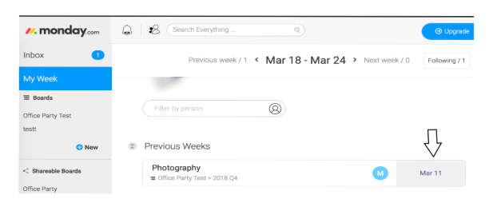
- Here is are the steps to get to modifying the date. User has to first click x button which isn’t visible unless hovered on. Then for step two user has to click arrow which isn’t visible unless hovered on to get to step 3. I would not hide these buttons and cut out step 2 so the user can finish task faster. 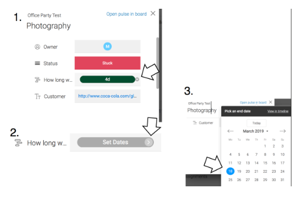
Participant grid
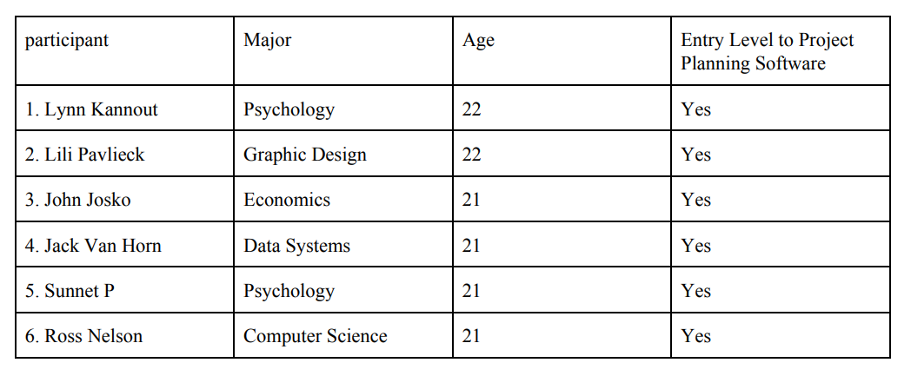Protocol Script
 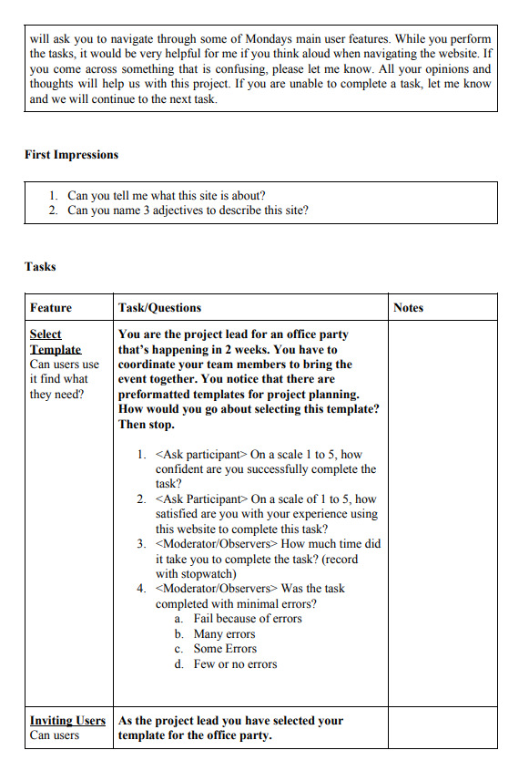
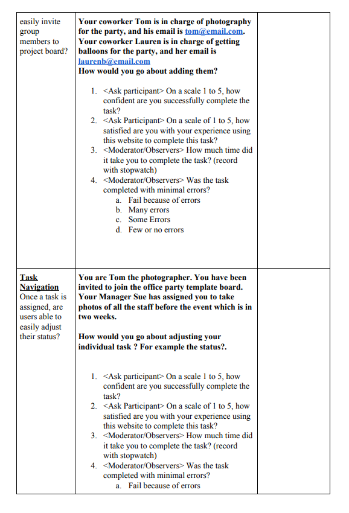
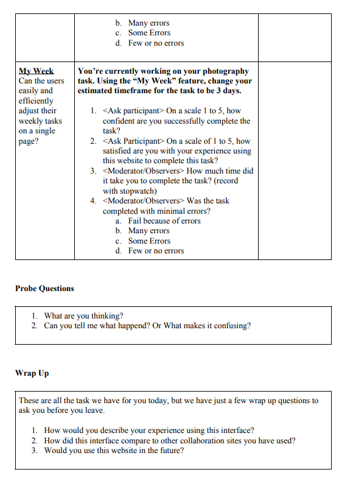
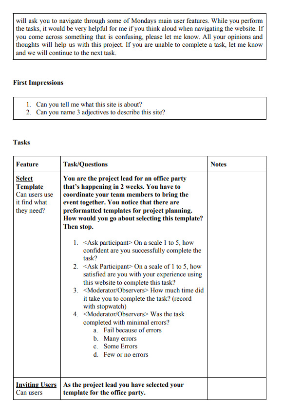
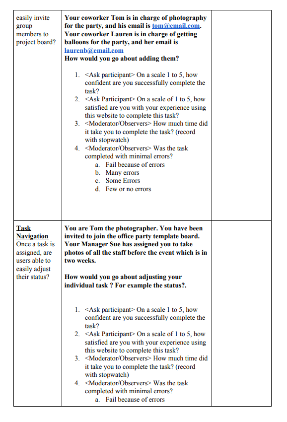
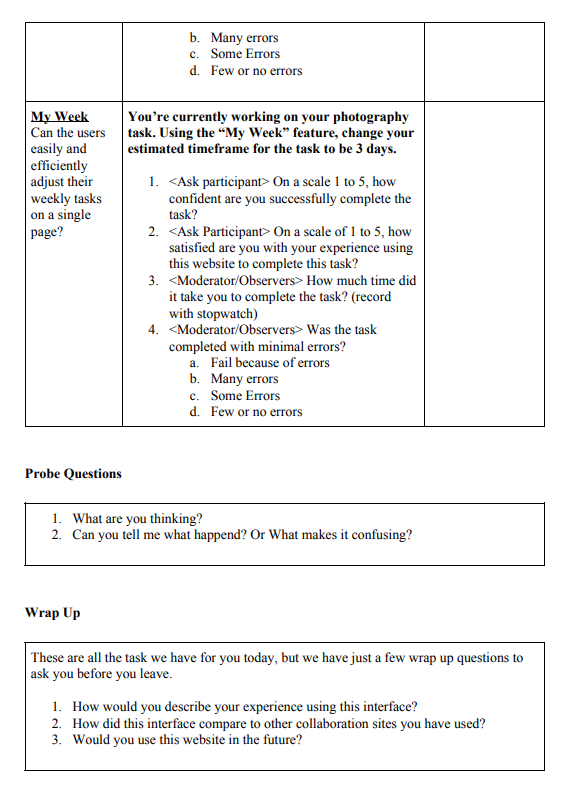
Concent Form
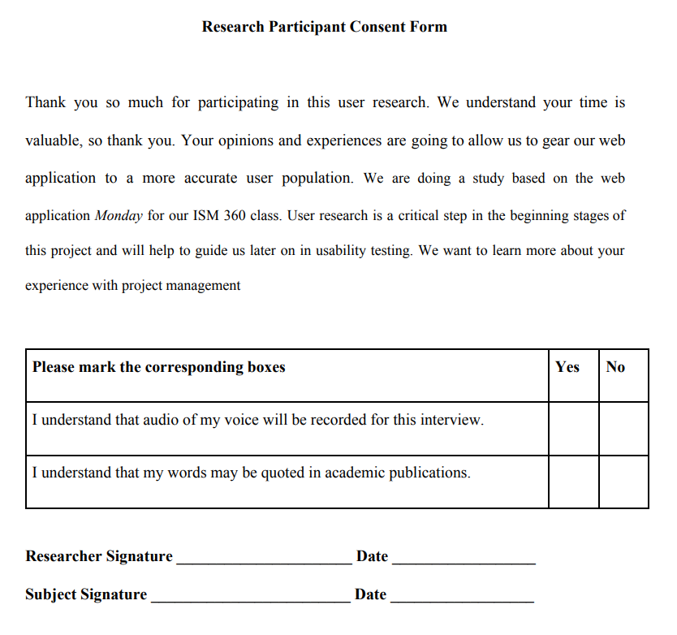Usability Analysis Presentation Link